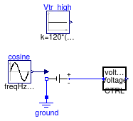

This package contais tests for check the correctness of the models
This package contains examples for the use of models that can be found in Buildings.Electrical.Utilities.
Extends from Modelica.Icons.ExamplesPackage (Icon for packages containing runnable examples).
| Name | Description |
|---|---|
| This test check the correctness of the voltage controller model |
 Buildings.Electrical.Utilities.Examples.TestVoltageCTRL
Buildings.Electrical.Utilities.Examples.TestVoltageCTRL
This test check the correctness of the voltage controller model

This example shows the use of the voltage controller.
The voltage controller is connected to a variable voltage source that oscillates between 140 and 100 V. The nominal voltage is Vnom = 120 V. The controller has the following settings:
Therefore, when the voltage controller measures a voltage that
is 10% higher that 120 V (that is 132 V), it sets its output signal y to zero.
The output signal stays at zero for Tdelay,
after which it expires.
Then, the controllers check again if the voltage is within the
accepted thresholds.
The image below shows how the signal becomes equal to zero when the measured voltage exceeds the threshold.

The figure shows that the signal y becomes zero around t = 1 s. After
Tdelay the voltage is still higher that 123 V and thus the controller waits until
t = 5 s to change the signal to one.
Extends from Modelica.Icons.Example (Icon for runnable examples).